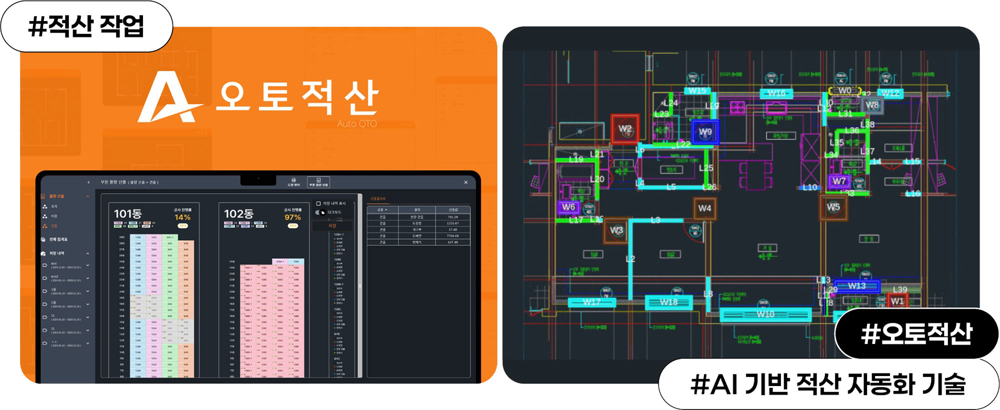

건설 프로젝트의 출발점, '적산' 업무의 한계
건설 프로젝트에서 공사비 산출의 출발점은 '적산'이다. 설계 도면을 바탕으로 벽돌, 타일, 철근 등 공사에 필요한 자재 물량을 계산하는 작업인데, 기존에는 전문가가 도면을 하나하나 분석하며 수작업으로 진행해야 했다. 이 과정은 프로젝트 규모에 따라 수시간에서 수십 시간이 걸리기도 하고, 작업자의 경험에 따라 결과 편차가 발생하기도 했다.
성남의 콘테크 스타트업 포비콘은 이러한 건설 산업의 오래된 문제를 기술로 해결하고 있다. 포비콘은 CAD 도면을 인공지능이 분석해 자재 물량과 공사비를 자동으로 산출하는 '오토적산' 솔루션을 개발했다. 이 기술은 기존에 약 10시간 이상 걸리던 적산 업무를 약 20분 수준으로 단축하며 건설 현장의 생산성을 크게 높이고 있다.

AI 기반 자동화 기술이 바꾸는 건설 현장
"AI 기반 자동화 기술로 적산 과정을 빠르고 정확하게 수행하도록 도와
건설 산업의 생산성을 크게 높일 수 있습니다."
포비콘의 핵심 기술은 Vision AI와 자체 알고리즘이다. AI가 건설 도면 속 공간 구조와 벽, 창호, 자재 요소를 자동으로 인식해 물량을 계산하고 이를 데이터 형태로 정리한다. 사용자는 도면 파일을 업로드하는 것만으로도 자재 물량과 산출 내역을 빠르게 확인할 수 있어 건설사와 설계사무소 등 다양한 건설 관련 기업에서 업무 효율을 높이는 도구로 주목받고 있다.
콘테크(Con-Tech)* 산업을 이끄는 스타트업의 도전
2024년 설립된 포비콘은 판교 창업존을 기반으로 성장하고 있는 콘테크 스타트업이다. AI 기반 건설 자동화 기술을 바탕으로 건설 도면 분석과 물량 산출을 자동화하며 업계의 관심을 받고 있다. 포비콘은 앞으로 적산을 넘어 건설 데이터 분석과 공정 관리까지 영역을 확장해 건설 산업의 디지털 전환을 이끄는 기술 기업으로 성장하는 것을 목표로 하고 있다.
*콘테크(Con-Tech) 건설(Construction)과 기술(Technology)의 합성어